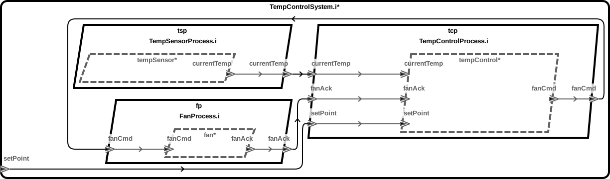

The following assumes a TCCOE22 Virtual Machine is being used
Applications >> Development/home/vagrant/workspace, or choose a different locationImport Projects... from the AADL Navigator viewExisiting Project into Workspace is selected and click NextSelect root directory: option to /home/vagrant/tccoe22/temperature_controltemperature-control is selected in the projects view and click Finish